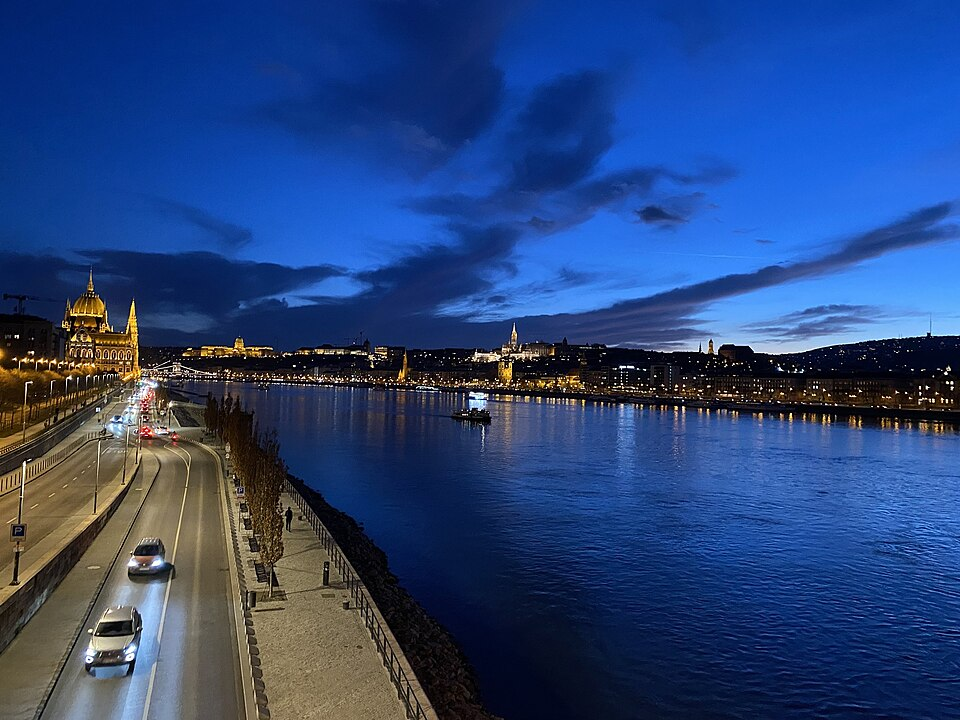

Освіта: КГ №104, КПІ.
Хобі:
Улюблені фільми:
З міст, у яких я бував, мені найбільше сподобався Будапешт. Історичні будівлі вздовж Дунаю створюють особливу атмосферу, а ввечері підсвічений парламент добре видно з протилежного берега.

Фото: Furkan Akkurt.